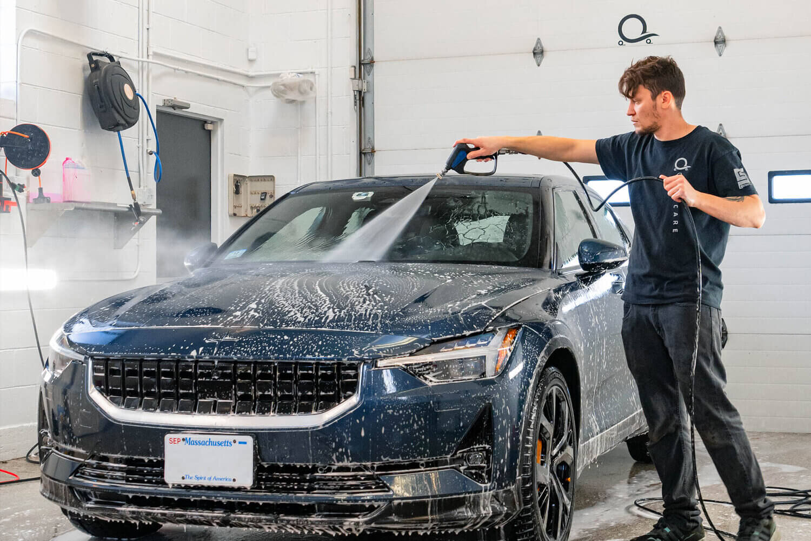
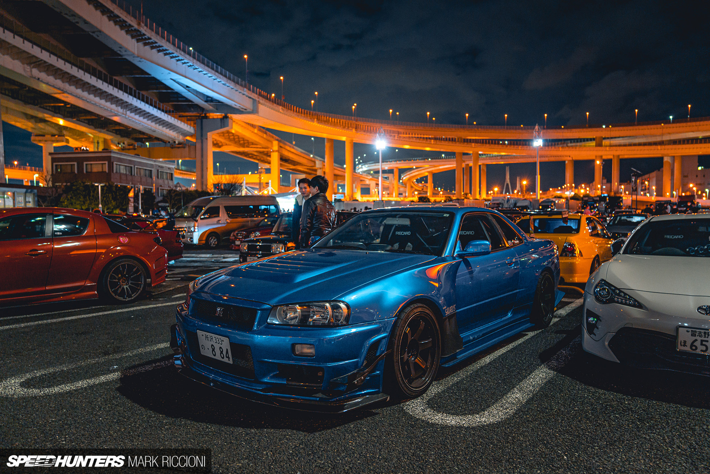

Comenzamos como jovista y, con el correr de los años y formaciones, se hizo realidad un sueño que nos apasiona. Seguimos con la ambición de crecer y mejorar día a día. Nuestros primeros trabajos fueron en un pequeño garaje y hoy en día, luego de mucho esfuerzo y miles de horas trabajadas, disponemos de un salón de estética automotriz en la Ciudad de Buenos Aires.

Hemos realizado tratamientos en gran variedad de marcas y modelos, pero nunca dejamos de amar el arte del detailing, ya que por más económico o costoso que sea un automóvil, para nosotros sigue siendo un trabajo a realizar a la perfección. Asimismo, continuamos evolucionando constantemente, aprendiendo día a día para estar siempre en plena formación dentro del rubro.
Si la pintura ya no brilla como antes, contamos con el conocimiento, experiencia, habilidad y las herramientas adecuadas para proceder de manera eficaz con nuestros tratamientos sobre la pintura de su vehículo.
Estos tratamientos eliminan rayas circulares (tipo tela de araña), manchas y demás detalles, dejándola brillante como debería estar. Queremos que nuestros clientes se vallan felices y conformes con el resultado de nuestro trabajo